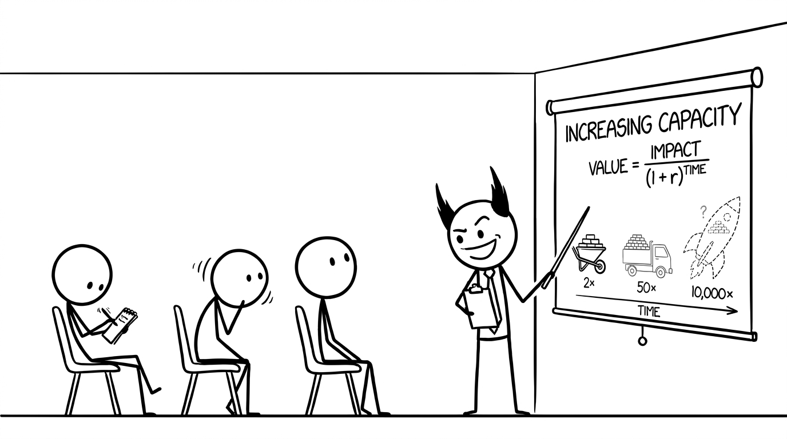

<section id="define-cap" data-transition="fade" style="display:flex; align-items:center; justify-content:center; padding:0; background:#fcfcfa">

<p style="position:absolute;left:0;bottom:10px;width:1920px;margin:0;text-align:center;font-family:'Patrick Hand', 'Trebuchet MS', sans-serif;font-size:22px;color:#8a8f98">Copyright Dobromir Montauk 2026</p>
<aside><b>Capacity.</b> Capacity is everything that doesn’t move a brick this week but lets you move more later: tools, roads, people, skills. Why discount? Because the future is uncertain. The truck might take two years; the Starship may never fly. With any real discount rate, the moonshot has to be enormously bigger to beat the wheelbarrow. The skill isn’t picking the biggest number; it’s picking the best impact for the time.</aside>
</section>
